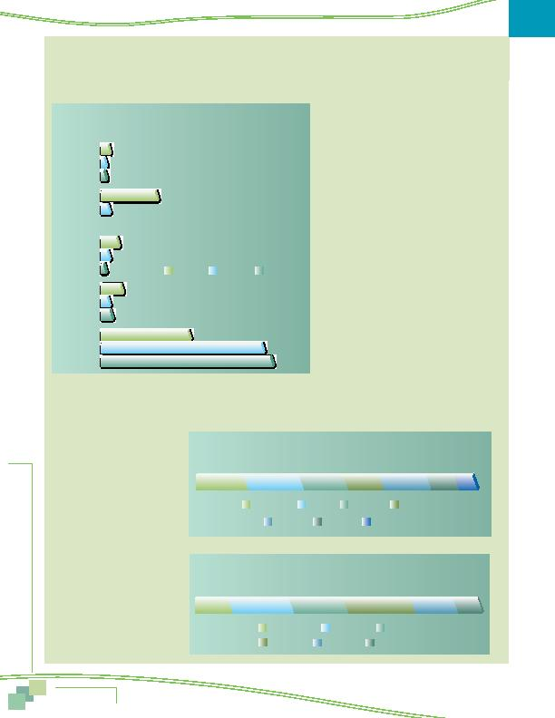

|

on e Comm higher than the 41% drive alone share noted for the District of Columbia alone. Transit use was nearly as high for the Inner Core as for the District of Columbia alone. This suggests that two Virginia jurisdictions included in the Inner Core are more similar to the District are to other suburban jurisdictions. location, in the ring designations defined earlier. nounced. Fewer than half (47%) of commuters who worked in the Inner Core area drove alone. This was dramatically lower than the drive alone rates for the Middle Ring and Outer Ring; in both of these areas about nine in ten workers drove alone. Transit use was high in the Inner Core, but nearly non-existent for commute trips to Middle Ring and Outer Ring worksites. This pattern obviously reflects both the availability of transit infrastructure in the Inner Core areas as well as the inbound focus of transit service during peak commuting hours. third of respondents (37%) commuted fewer than 10 miles one-way. Three in ten (29%) traveled between 10 and 19 miles. A small percentage (7%) traveled 40 or more miles. way. As shown in Figure 58, a third (33%) of respondents commuted 20 minutes or less and 43% commuted between 21 and 45 minutes. Nearly a quarter (24%) traveled more than 45 minutes, with nine percent traveling more than one hour one-way. 2010, commuters traveled an average of 16.3 miles and 36 minutes, essentially the same as in 2007 (16.3 miles and 35 minutes) and 2004 (16.2 miles and 34 minutes). |